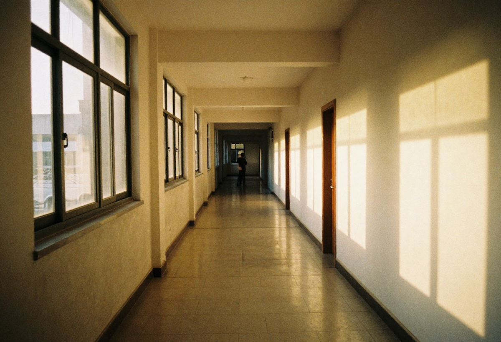

Rüyada Koridor Görmek: Bilinçaltının Geçiş Alanı
Rüyalar, bilinçaltımızın sembollerle konuştuğu özel alanlardır. Bu sembollerden biri de koridordur. Rüyada koridor görmek; geçiş, karar, belirsizlik ve içsel yolculuk gibi pek çok anlam barındırabilir. Bu yazıda rüyada koridor görmenin olası anlamlarını, farklı senaryolara göre yorumlarını ve psikolojik açıdan ne ifade edebileceğini detaylı şekilde ele alıyoruz.
Rüyada Koridor Görmek Ne Anlama Gelir?
Genel olarak koridor, bir yerden başka bir yere geçişi temsil eder. Rüyada koridor görmek de kişinin hayatında ara bir dönemde olduğunu, bir karar aşamasında bulunduğunu veya henüz netleşmemiş bir sürecin içinde yer aldığını gösterebilir.
Bu rüya çoğu zaman:
- Hayat değişikliklerini
- Kararsızlıkları
- Bekleyiş dönemlerini
- İçsel sorgulamaları
sembolize eder.
Rüyada Uzun Koridor Görmek
Uzun bir koridor, sürecin henüz tamamlanmadığını ve sabır gerektirdiğini işaret edebilir. Kişi hedeflerine ulaşmak için zamana ihtiyaç duyuyor olabilir.
Olumlu yorum:
- Azimle ilerlenen bir yol
- Emek verilen uzun vadeli hedefler
Olumsuz yorum:
- Yorucu bir bekleyiş
- Belirsizliğin uzaması
Rüyada Karanlık Koridor Görmek
Karanlık koridor genellikle bilinmeyenden duyulan korkuları temsil eder. Rüya sahibinin geleceğe dair net bir görüşe sahip olmadığını veya bilinçaltında bastırdığı endişeler bulunduğunu gösterebilir.
Bu rüya, kişinin iç dünyasında yüzleşmekten kaçındığı konular olduğuna da işaret edebilir.
Rüyada Aydınlık Koridor Görmek
Aydınlık bir koridor, umut ve netlik sembolüdür. Rüya sahibinin doğru yolda olduğunu, önünün açık olduğunu ve yakın zamanda rahatlatıcı gelişmeler yaşayabileceğini gösterebilir.
Genellikle:
- Doğru kararlar
- İç huzur
- Olumlu gelecek beklentileri
ile ilişkilendirilir.
Rüyada Koridorda Yürümek
Koridorda yürümek, kişinin aktif olarak bir değişim sürecinde olduğunu gösterir. Rüya sahibi hayatındaki geçişleri bilinçli şekilde yönetmeye çalışıyor olabilir.
Yürüyüş rahat ve sakinse, süreç olumlu ilerliyor demektir. Zorlanarak yürümek ise içsel direnç veya dış engellerin varlığına işaret edebilir.
Rüyada Koridorda Kaybolmak
Koridorda kaybolmak, yön duygusunun yitirilmesi anlamına gelir. Kişi gerçek hayatta kararsızlık, kafa karışıklığı veya yanlış seçim korkusu yaşıyor olabilir.
Bu rüya aynı zamanda kişinin kendini yalnız hissettiğini de gösterebilir.
Psikolojik Açıdan Rüyada Koridor
Psikolojik yorumlara göre koridor, bilinç ile bilinçaltı arasındaki geçiş alanıdır. Kişinin henüz farkına varmadığı düşünceler, bastırılmış duygular ve içsel çatışmalar bu sembol üzerinden rüyaya yansıyabilir.
Özellikle stresli dönemlerde görülen koridor rüyaları, zihnin çözüm arayışında olduğuna işaret eder.
Sonuç
Rüyada koridor görmek, çoğunlukla hayatın ara duraklarını ve geçiş dönemlerini temsil eder. Rüyanın anlamı; koridorun uzunluğu, ışığı, içinde yaşananlar ve rüyadaki duygulara göre değişiklik gösterebilir.
Rüyalar kişiseldir. Bu nedenle en doğru yorum, rüyayı gören kişinin yaşam koşulları ve ruh haliyle birlikte değerlendirilmelidir.
Bu içerik genel rüya yorumları kapsamında hazırlanmıştır ve kesinlik içermez.